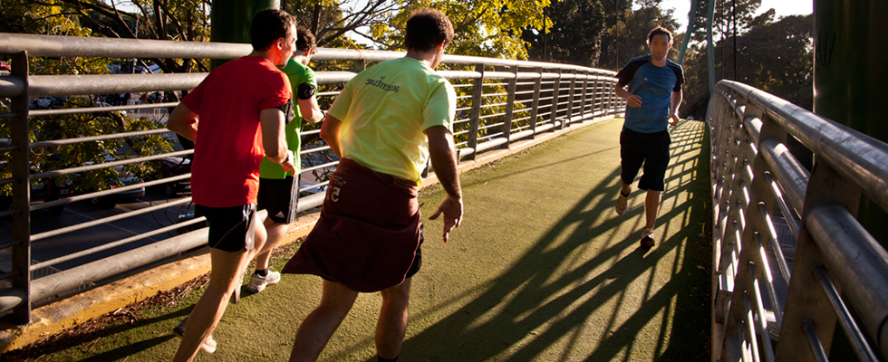

Palermo

Distancia: 9km.
Punto de salida: Centro de Información Turística (CIT) Planetario. Av. Sarmiento 4200 y av. Figueroa Alcorta.
Recorrido: MALBA, Jardín Japonés, Planetario, Rosedal de Palermo, Monumento a los Españoles, Museo de Arte Decorativo, Museo Nacional de Bellas Artes, Facultad de Derecho.
Día y horario: 2º sábado y 4º domingo del mes a las 10 horas.